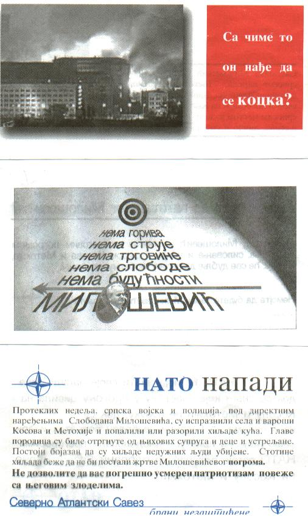

| Traduzione in italiano

Con che cosa sta giocando d'azzardo?
Non c’è carburante
Non c’è corrente
Non c’è commercio
Non c’è libertà
Non c’è futuro
Milosevic
ATTACCHI NATO
Nelle ultime settimane l'esercito e la polizia serba, agli ordini diretti di Slobodan Milosevic, hanno svuotato i villaggi e le cittadine del Kosovo e della Metohija e hanno incendiato distrutto migliaia di case.
I capi famiglia sono stati strappati dalle loro mogli e bambini e fucilati.
Si teme che siano stati uccisi migliaia di uomini innocenti.
Centinaia di migliaia scappano per non diventare vittime del pogrom di Milosevic.
Non permettete che il patriottismo mal indirizzato Vi unisca ai suoi crimini
L’Alleanza Nord Atlantica
Difende gli indifesi
|